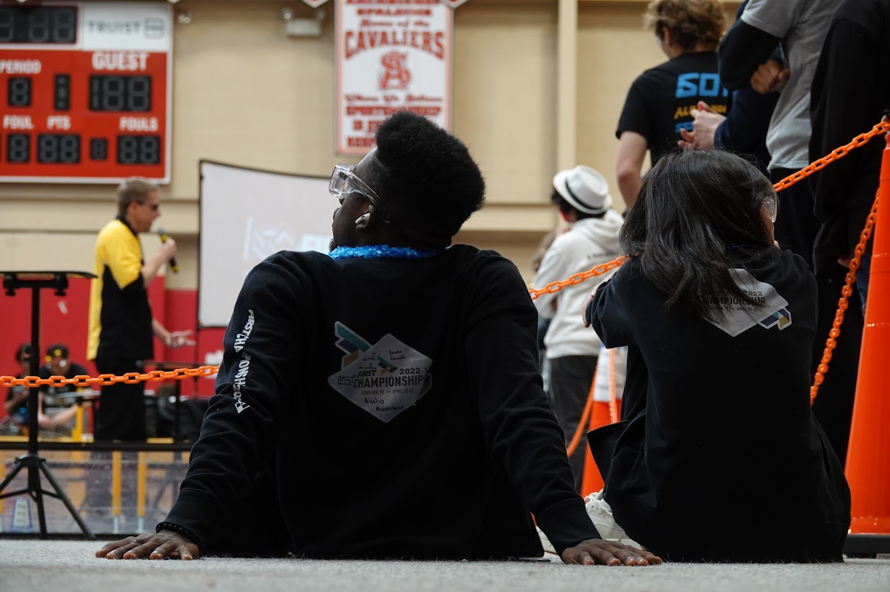
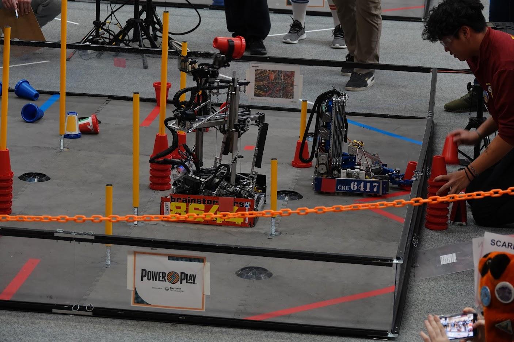
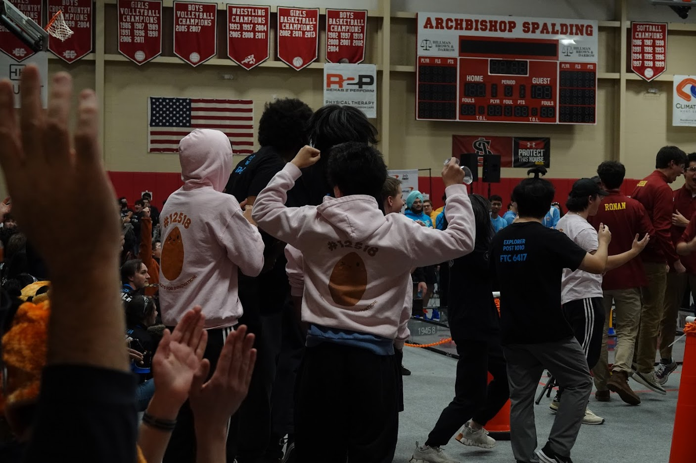

Explorer Post 1010 registered Team 6417 the Blu Cru in the 2022/2023 FIRST Tech Challenge robotics program. The theme and title of the challenge was Power Play. We kicked off our effort in late August. We set up a game field in the Rockville Library Makerspace with official boarder walls. We recruited seven new members. We ordered some new parts, but built an initial robot mostly out of parts from last year. We signed up for two qualification tournaments in December and January. Our team records/results are available on-line (Records as of March 2023).Some of the videos are on our YouTube channel. While it is hard to see in the videos and pictures, we redesigned and rebuilt our robot several times between the tournaments.

Our first qualifier tournament was at Atlee High School, Mechanicsville, VA, Sunday, December 4, 2022. There were 25 teams. We did well, but not quite well enough to advance to the regional championship (awards). We were ranked #4 with a record of 4-1-0 and an OPR of 78.2. We won the Design Award 3rd Place and Motivate Award Winner. The tournament is on YouTube, Matches 4, 7, 12, 17, 24, Semifinals 2-1, 2-2, 2-3. Our second qualifier tournament was at the DC International School, DC, Sunday, January 15, 2023. There were 25 teams. We did great (awards), and advanced to the Chesapeake Region Championship. We were ranked #15 with a record of 2-3-0 and an OPR of 79. We won the Design Award 3rd Place and the Think Award. We were the 1st team selected to the winning alliance giving us the advancement. The tournament is on YouTube, Matches 6, 10, 14, 22, 32, Semifinals 2-1, 2-2, 2-3, and Finals 1, 2.

The Chesapeake Regional Championship was at Archbishop Spalding High School at Severn, MD on Saturday, February 11, 2023. There were two divisions of 26 teams. We were in the Scarlet Division . We did great (rankings) and were 2nd team selected for the Scarlet Division Winning Alliance (Playoff Matches). Our alliance won the overall championship finals and advanced to the FTC Worlds Championship (awards). Recap Video
The full tournament Scarlet Division is on YouTube. Look at matches 5, 9, 16, 22, 27, Semifinals 1, 2, Division Finals 1, 2, and then the Event Finals between the Scarlet and Violet divisions 1, 2, 3. Our video of Match 5, others videos of Match 27, Division Finals Match 2. For the second year in a row, we received an invitation to the World Championship in Houston in April. The whole team attended. Coach Neil drove the robots and FTC field to Houston. They stayed in a home. Their robot performed well but were up against world's best. Here are the match scores. Full videos of Day 1 and Day 2.